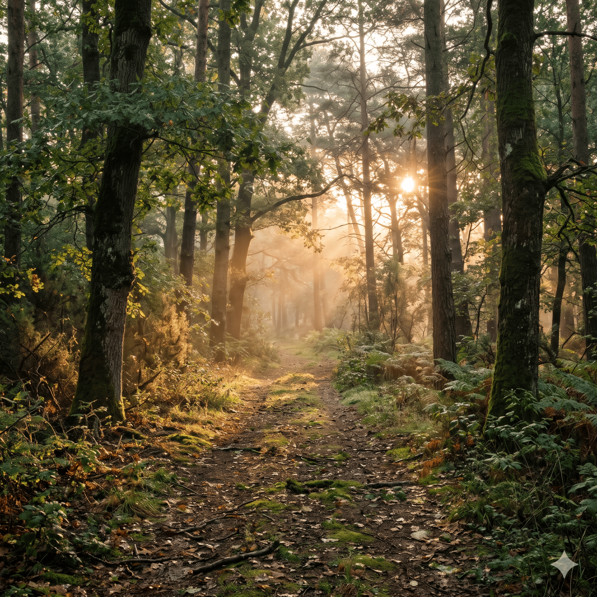
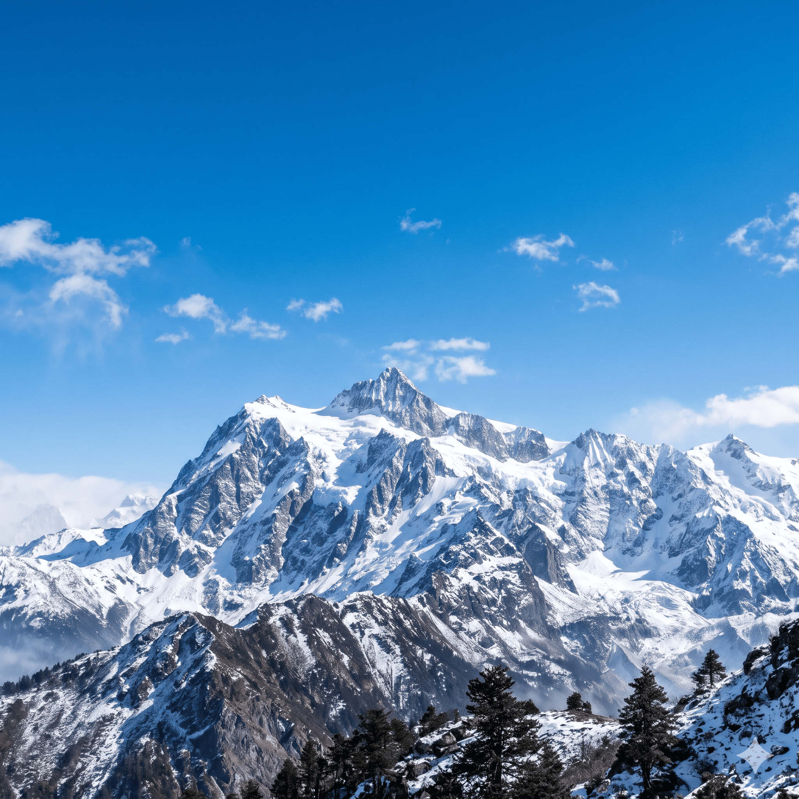
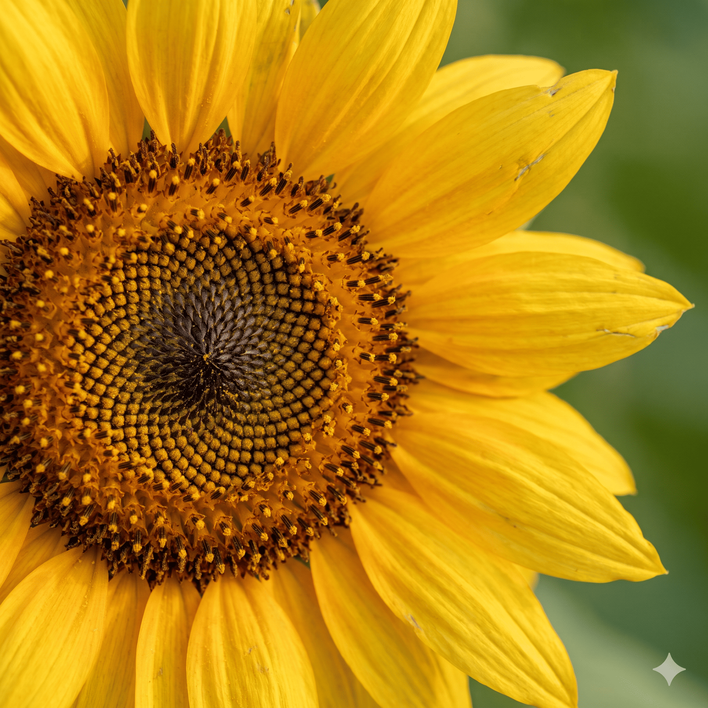
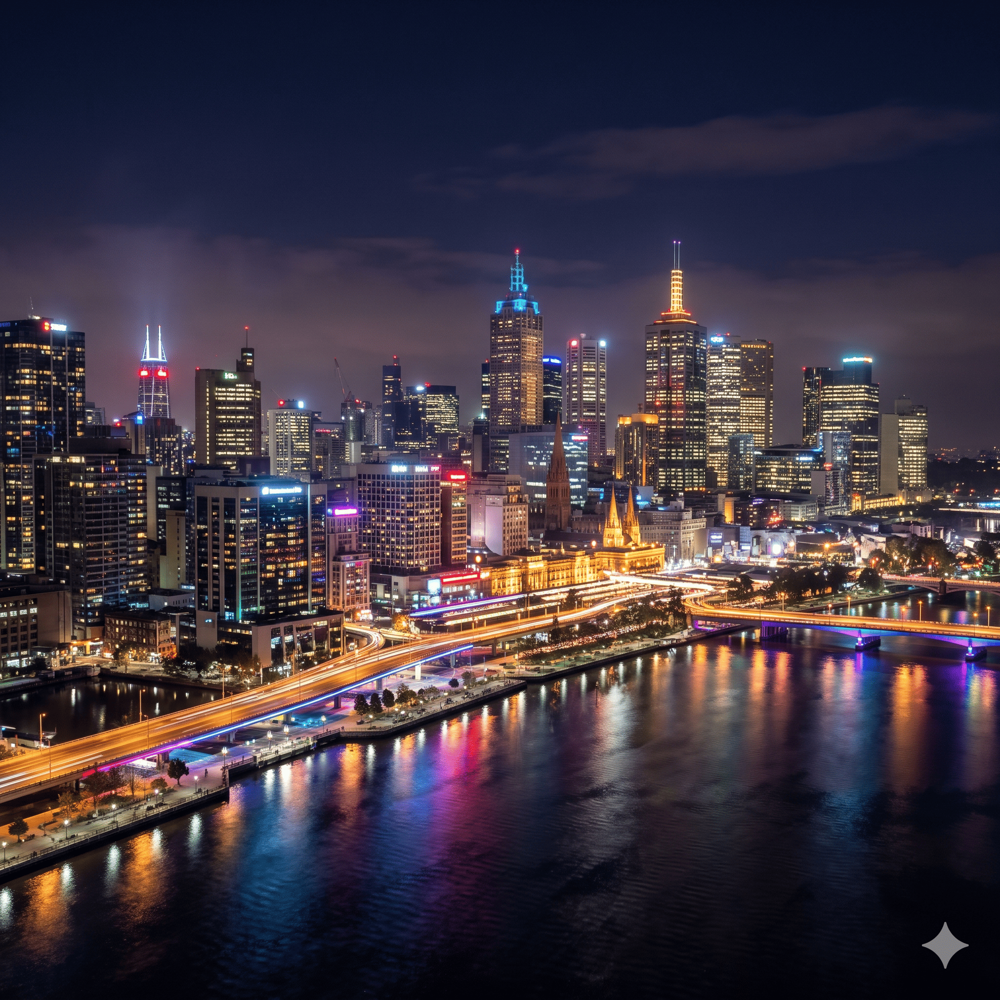
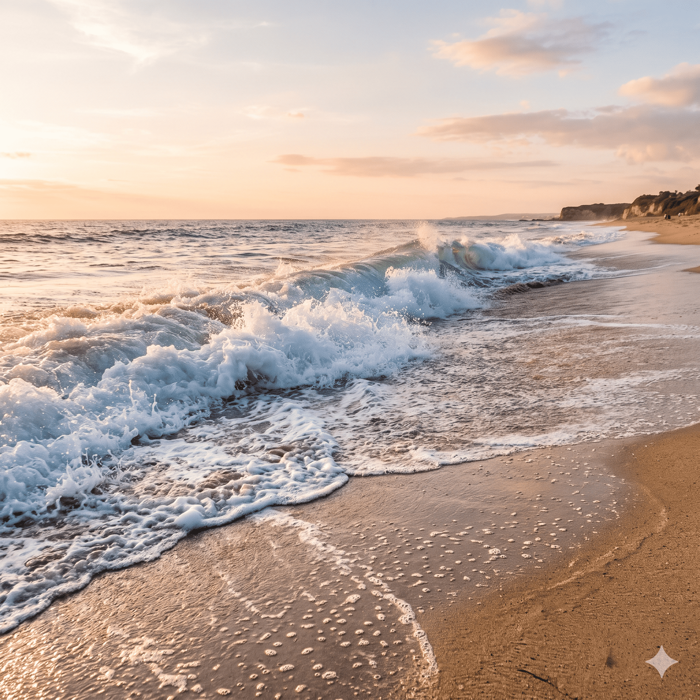
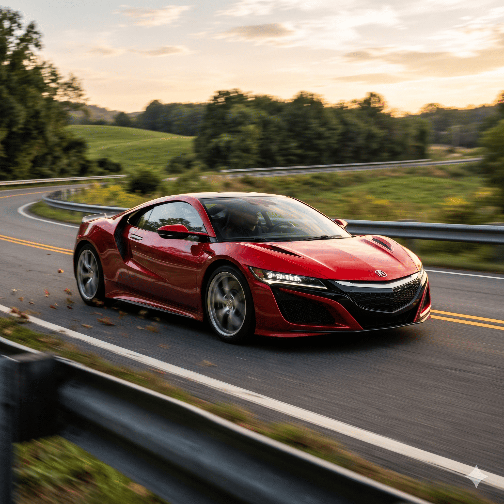
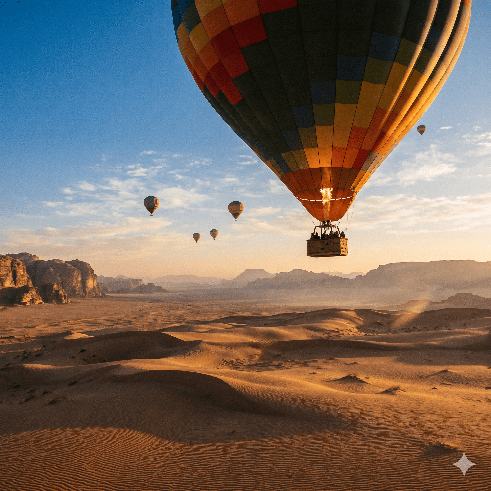
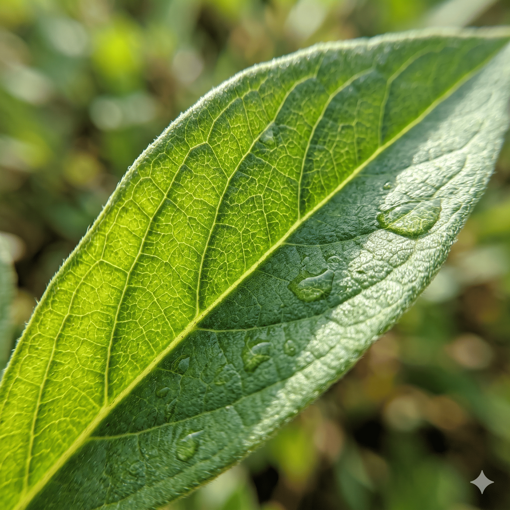
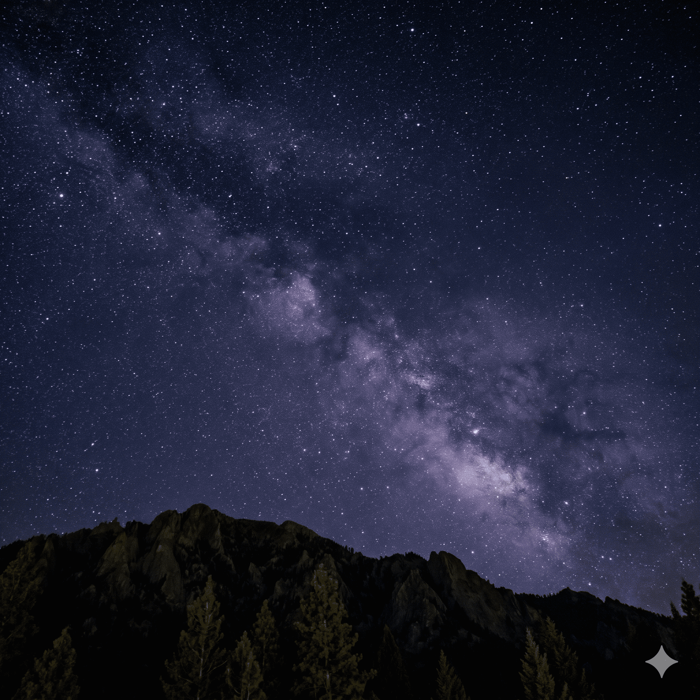

Welcome to my personal photography portfolio. This collection highlights some of my favorite moments captured around the world, focusing on landscapes, architecture, and nature.
This website is built with a responsive, mobile-first design. It will automatically adjust its layout based on your screen size and respects your device's motion and dark mode preferences.








